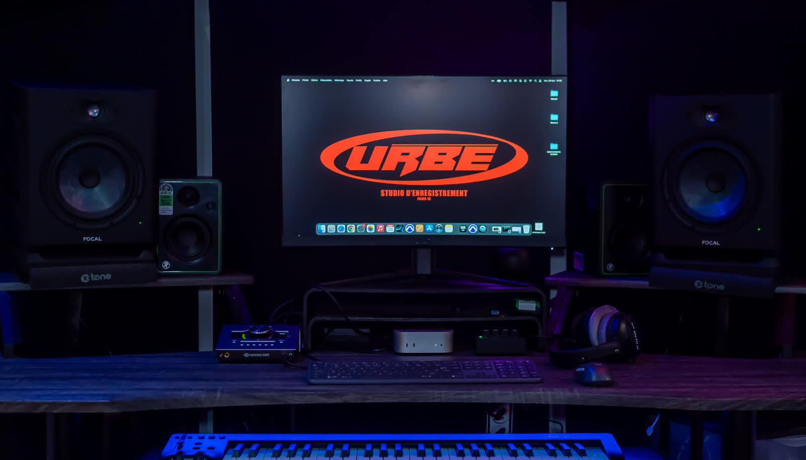

Mixage en ligne pour l’Afrique : un studio parisien accessible partout
Pas besoin d'être à Paris pour faire mixer votre son par un ingénieur professionnel. Urbe Studio travaille à distance avec des artistes basés au Cameroun, au Mali, en RDC, en Guinée et dans toute l'Afrique francophone — même méthode, même exigence qu'en cabine.

Le mixage à distance, une vraie solution pour l'Afrique francophone
Beaucoup d'artistes africains produisent des titres de qualité mais n'ont pas toujours accès, localement, à un ingénieur spécialisé dans les musiques urbaines et les codes internationaux du streaming. Le mixage en ligne résout ce problème : vous envoyez vos multipistes depuis n'importe quelle ville, un ingénieur dédié s'occupe du reste.
Un fuseau horaire qui joue en votre faveur
Contrairement à un service basé aux États-Unis, Urbe Studio est à Paris (UTC+1/+2) — un décalage minime avec la majorité des capitales francophones d'Afrique de l'Ouest et du Centre (Dakar, Abidjan, Bamako, Ouagadougou, Cotonou et Conakry sont en GMT, Douala et Kinshasa proches de l'heure de Paris). Les échanges et allers-retours sur un mix restent rapides.
Comment fonctionne le mixage à distance
- Envoi des pistes en ligne, où que vous soyez.
- Ingénieur dédié, nommé sur votre projet : Virgile (aka Punch), Olid, Chourak ou BMS.
- Mix adapté au genre : rap, afrobeat, amapiano, drill — chaque style a ses codes.
- Livraison sous 7 jours, urgence 48h disponible.
- Retouches incluses, échanges directs avec l'ingénieur.
- Tarifs affichés : mix 120€/titre, mastering 50€ (-50 % avec un mix), paiement en ligne sécurisé.
Studio de mixage ou studio d'enregistrement en ligne ?
Urbe Studio couvre les deux besoins : le mixage et mastering en ligne pour un titre déjà enregistré, et l'accompagnement à distance pour structurer une session avant même l'enregistrement (choix des micros à privilégier localement, conseils de gain staging, préparation des fichiers).
Par genre
Par pays
Envoie ton titre, où que tu sois en Afrique
Mix à partir de 120€ · Urgence 48h disponible · 100% à distance
Commander mon mix →